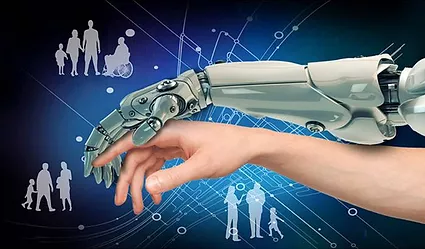
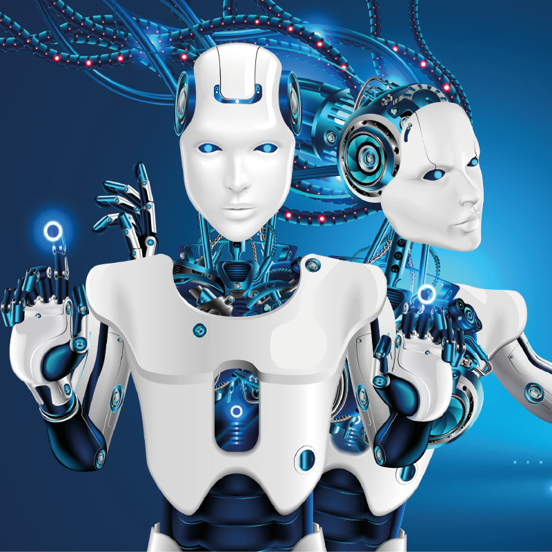
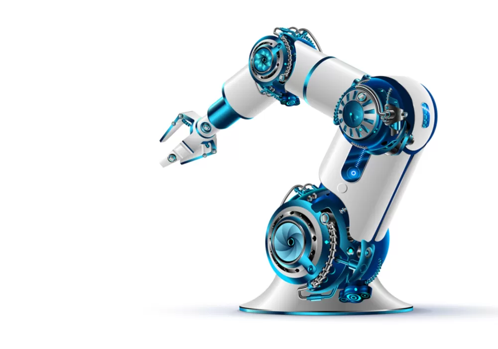
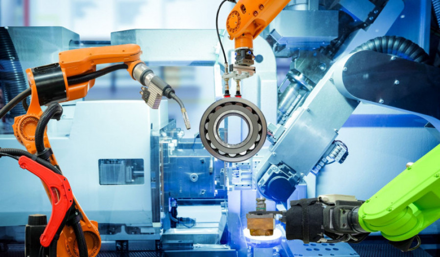

ROBÓTICA
¿Qué es?
Un robot es una máquina automática programable capaz de realizar
determinadas operaciones de manera autónoma y sustituir a los
seres humanos en algunas tareas. Como curiosidad, el término
“robot” se popularizó por la obra R.U.R (Robots Universales
Rossum) de Karel Čapek en 1920. En la traducción al inglés de la
obra teatral, la palabra checa “robota”, que significa trabajos
forzados o trabajador, fue traducida al inglés como robot. Los
robots que conocemos hoy en día fueron desarrollados después de la
Segunda Guerra Mundial, debido a la creciente demanda de
automatización en la industria del automóvil. Antes los robots no
eran más que herramientas para la automatización, programados para
realizar tareas específicas: transportar, cargar, descargar,
soldar, etc. Actualmente, existen los llamados robots
inteligentes, programados para la detección de cualquier
alteración de su medio ambiente y para actuar en consecuencia.

¿Qué tipos de robots existen?
Según la época o generación en la que se desarrollaron, existen
cuatro tipologías de robot:
-
Robots de primera generación: Son los robots más básicos:
están destinados a la manipulación y cuentan con sistemas
mecánicos que pueden funcionar de dos maneras: por secuencia fija
o variable.
-
Robots de segunda generación: Son robots que aprenden. Es
decir, cuentan con un sistema de aprendizaje que consiste en
repetir una secuencia de movimientos previamente realizada y
programada por un operario (o sea, un ser humano) que indique, por
un lado, el proceso y, por otro, la ejecución del mismo.
-
Robots de tercera generación: En este caso, el operario es
sustituido por un ordenador. De esta manera, el ordenador
determina los movimientos y ejecuta las órdenes de programación.
-
Robots de cuarta generación: Son los más avanzados y los
que se utilizan desde hace varios años en las empresas más
pioneras. En este tipo de robots se hace uso del IoT y la
Inteligencia Artificial. Se trata de robots inteligentes: poseen
un número mayor de sensores y existe una doble dirección de
información, por lo que el ordenador es capaz de recibir
información en tiempo real y puede adelantarse a sus necesidades.

Ventajas y desventajas de la Robótica
Algunas de las ventajas del uso de la robótica son:
Los robots no se cansan como los humanos y pueden trabajar las 24
horas del día y los 365 días al año.
Se consigue una importante reducción de costes porque los robots
son capaces de realizar trabajos en menos tiempo y espacio,
acortando el tiempo que un producto pasa por la cadena de montaje
sin que afecte a la calidad del producto.
Se consigue aumentar la productividad por el uso más eficiente que
se hace de todos los recursos y el poco margen de error de un
robot bien configurado.
La simplificación de la programación robótica hace más fácil que
los trabajadores puedan manejarlo y supervisarlo con una formación
previa.
Es por esto que la robótica es fundamental en muchas empresas.


Usos de la Robótica
-
Uso doméstico: Robots aspiradora como Conga o Roomba.
- Medicina: Cirugía asistida como da Vinci.
- Transporte: Coches sin conductor como Waymo.
- Industria militar: Aviones autónomos.
-
Soluciones para empresas: Aentros logísticos automatizados
(Amazon ya lo hace) o fabricación con brazos articulados (UR,
Kuka).
-
Soluciones de software: Existen entidades bancarias que ya
trabajan con sistemas basados en inteligencia artificial que
pueden revisar contratos por sí solos, como AI Factory de BBVA.